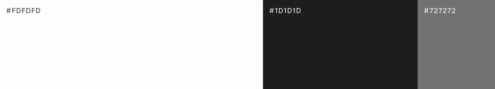

Yuka Kanno Portfolio
Yuka Kanno Portfolio -
Yuka Kanno Portfolio -
Yuka Kanno Portfolio -
Yuka Kanno Portfolio -
就職活動にあたり、自身の経歴や制作物をまとめたポートフォリオサイトを制作しました。中身のコンテンツが映えるよう、白と黒の配色や必要最低限のページ構成でシンプルにまとめつつも、エッジが効いていて「私らしさ」が伝わる、ポートフォリオ自体も一つの作品として見ていただけるようなサイトデザインを目指しました。
- ターゲット
- Web制作会社の採用担当者の方々
- 目的
- 就職活動を行うにあたり、自身の経歴や強み、またこれまでの制作物や思考を伝えるため
- 情報設計
- 採用担当者の方がどういう感情の流れで見るかを想像し、ストーリーを組み立てながら構成を組みました。まずTOPで全体の雰囲気や概要を知っていただいた後、Aboutページでは経歴や強みを記載し、なぜデザイナーを目指そうと思ったのか、どのような部分で貢献できるのか、根拠を持って伝えています。そのように自分についての情報を伝えた上で、制作物もあわせて見ていただき、自身の人となりとスキルをセットで伝えられるよう構成しました。
- デザイン
-
基本ルールには忠実に則りながらも「一般的によくあるポートフォリオ」という型にハマらないような、「私らしさ」が伝わるデザインを第一に心がけました。先端の尖ったフォントやメインビジュアルのメタルテキストは、シンプルな中にエッジを効かせた自分の「好き」と「私らしさ」を表しています。また全体的にテキスト量が多くなってしまうため、単調にならないよう白と黒の背景色を交互にしメリハリをつけたり、動きやレイアウトで工夫を加えるようにしました。

- 制作範囲・期間
-
企画、ワイヤーフレーム：5日
デザイン：2週間
コーディング：3週間 - 使用ツール
- Illustrator / Photoshop / XD / Visual Studio Code